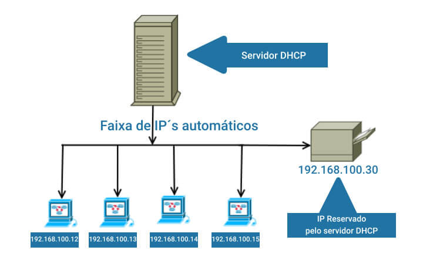

Serviços de Infraestrutura
Entenda e veja o funcionamento destes elementos!
O que é um servidor?
Um servidor é como um computador poderoso que está sempre ligado e tem um trabalho muito importante. Ele existe para "servir" ou fornecer coisas para outros computadores ou dispositivos, chamados de clientes. Pense em um servidor como um garçom em um restaurante: ele recebe os pedidos dos clientes e traz a comida que eles querem.
Como um servidor funciona?
Imagine que você queira ver um site na internet, como o Facebook. Quando você digita "www.facebook.com" no seu navegador, seu computador envia um pedido para o servidor do Facebook. O servidor do Facebook recebe esse pedido, pega as páginas e imagens do site e as envia de volta para o seu computador, para que você possa ver a página do Facebook no seu navegador.
Tipos de servidores
Os servidores são componentes fundamentais da infraestrutura de rede e sistemas em qualquer organização. Dentre os variados tipos de servidores, destacam-se os servidores web, que hospedam sites e aplicativos online, os servidores de email, que gerenciam a comunicação por email, os servidores de arquivos, que permitem o compartilhamento de dados, os servidores de banco de dados, que armazenam e organizam informações críticas, e os servidores de aplicativos, que executam software empresarial. Além desses, existem servidores especializados, como os de jogos, DNS, proxy, impressão e vídeo, cada um cumprindo uma função específica na rede, contribuindo para a operação eficiente e segura dos sistemas e serviços de uma organização.

Servidor DHCP
Servidores DHCP (Dynamic Host Configuration Protocol) são responsáveis por atribuir automaticamente endereços IP e outras configurações de rede, como máscara de sub-rede e gateway, a dispositivos em uma rede, tornando a configuração de redes mais eficiente e automatizada. Eles desempenham um papel crucial em redes locais (LANs), eliminando a necessidade de configuração manual de cada dispositivo, como computadores e dispositivos móveis, simplificando a administração e garantindo a conectividade sem problemas.
Servidor DNS
Um servidor DNS (Domain Name System) é uma parte essencial da infraestrutura da internet que age como um "catálogo telefônico" digital. Sua principal função é traduzir nomes de domínio, como www.exemplo.com, em endereços IP, que são números que os computadores usam para localizar uns aos outros na rede. Quando você digita um nome de domínio em seu navegador, o servidor DNS recebe essa solicitação e fornece o endereço IP correspondente, permitindo que seu dispositivo encontre o servidor correto na internet. Além disso, os servidores DNS também armazenam informações sobre a hierarquia de domínios e ajudam a encaminhar o tráfego de internet de forma eficiente, tornando possível a navegação e a comunicação online.
Servidor HTTP
Um servidor HTTP (Hypertext Transfer Protocol) é um tipo de servidor de software que gerencia a comunicação entre computadores na internet. Sua principal função é receber solicitações de navegadores da web e outros clientes, como aplicativos móveis, e enviar as páginas da web correspondentes, juntamente com outros recursos, como imagens e arquivos, para que os usuários possam visualizar os sites. O servidor HTTP segue regras específicas para transmitir informações pela web, permitindo a entrega eficiente de conteúdo na forma de páginas da web e dados, tornando assim a navegação na internet possível.
Os maiores Servidores!
Alguns dos maiores servidores do mundo são operados por gigantes da tecnologia como Google, Amazon, Microsoft e Facebook. Essas empresas mantêm enormes centros de dados com milhares de servidores para hospedar seus serviços, como mecanismos de busca, serviços de nuvem, redes sociais e muito mais. Esses servidores são distribuídos globalmente para garantir desempenho e disponibilidade consistentes em todo o mundo. Além disso, empresas de hospedagem na web, como a Amazon Web Services (AWS) e a Microsoft Azure, também possuem servidores em escala massiva, permitindo que empresas de todos os tamanhos hospedem seus sites e aplicativos em infraestruturas robustas e altamente escaláveis. Esses servidores desempenham um papel crucial na sustentação da infraestrutura digital global.
Em relação aos valores, é importante observar que os custos de construção e operação de centros de dados em escala massiva são extremamente altos. As empresas investem bilhões de dólares na infraestrutura necessária, incluindo servidores, resfriamento, energia e segurança. Os gastos também incluem despesas contínuas de manutenção e atualização para garantir a eficiência e a segurança dos servidores.
Quanto aos valores cobrados por empresas de hospedagem na web, como a Amazon Web Services e a Microsoft Azure, eles variam de acordo com os serviços utilizados e a quantidade de recursos necessários. Essas empresas oferecem uma variedade de planos de preços que atendem a diferentes necessidades, desde pequenas empresas até grandes corporações. Os preços podem ser baseados em uso, o que significa que os clientes pagam apenas pelo que realmente utilizam, tornando os serviços mais escaláveis e acessíveis para uma ampla gama de empresas.
Conlusões Finais
Os servidores desempenham um papel essencial no mundo da web e na infraestrutura da internet. Eles são os alicerces invisíveis que permitem o funcionamento de sites, aplicativos, serviços de e-mail, armazenamento em nuvem e muito mais. Graças aos servidores, a informação e a comunicação são entregues de forma rápida e eficaz, conectando pessoas e organizações em todo o mundo. À medida que a tecnologia continua a evoluir, os servidores desempenharão um papel cada vez mais vital na moldagem do futuro digital, garantindo que a web continue a ser uma força impulsionadora da inovação e da conectividade global.